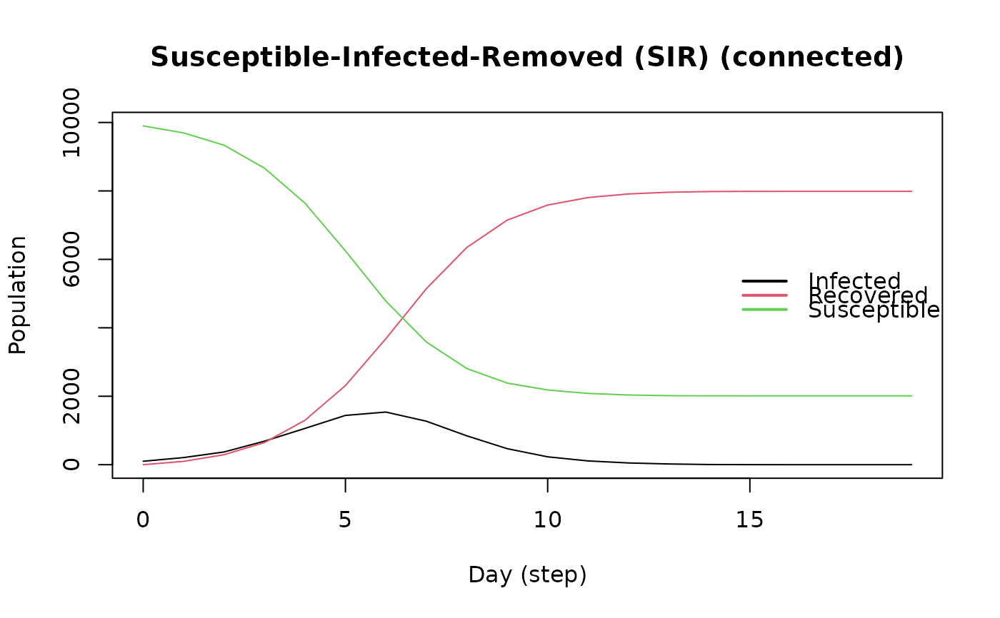
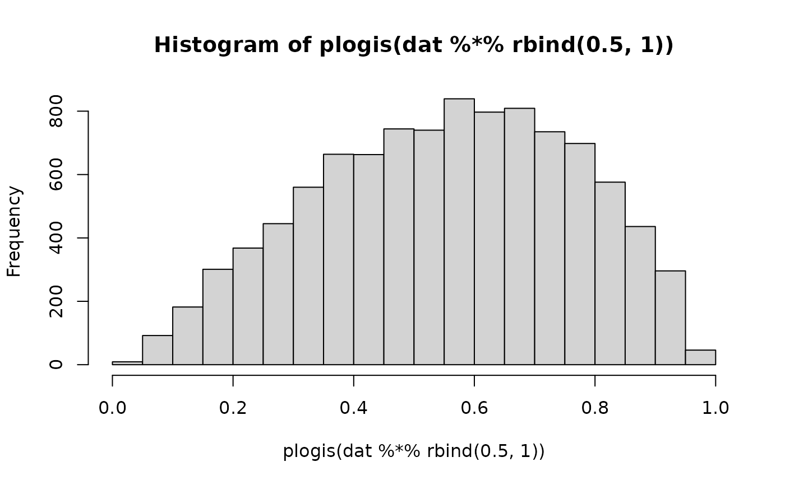
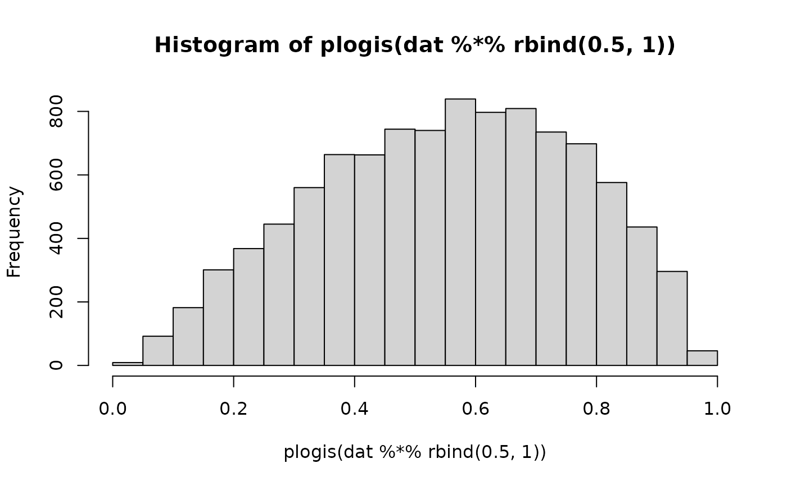

Tools are functions that affect how agents react to the virus. They can be used to simulate the effects of vaccination, isolation, and social distancing.
Usage
tool(
name,
prevalence,
as_proportion,
susceptibility_reduction,
transmission_reduction,
recovery_enhancer,
death_reduction
)
set_name_tool(tool, name)
get_name_tool(tool)
add_tool(model, tool, proportion)
rm_tool(model, tool_pos)
tool_fun_logit(vars, coefs, model)
set_susceptibility_reduction(tool, prob)
set_susceptibility_reduction_ptr(tool, model, param)
set_susceptibility_reduction_fun(tool, model, tfun)
set_transmission_reduction(tool, prob)
set_transmission_reduction_ptr(tool, model, param)
set_transmission_reduction_fun(tool, model, tfun)
set_recovery_enhancer(tool, prob)
set_recovery_enhancer_ptr(tool, model, param)
set_recovery_enhancer_fun(tool, model, tfun)
set_death_reduction(tool, prob)
set_death_reduction_ptr(tool, model, param)
set_death_reduction_fun(tool, model, tfun)
# S3 method for class 'epiworld_agents_tools'
print(x, max_print = 10, ...)
set_distribution_tool(tool, distfun)
distribute_tool_randomly(prevalence, as_proportion, agents_ids = integer(0))
distribute_tool_to_set(agents_ids)Arguments
- name
Name of the tool
- prevalence
Numeric scalar. Prevalence of the tool.
- as_proportion
Logical scalar. If
TRUE,prevalenceis interpreted as a proportion of the total number of agents in the model.- susceptibility_reduction
Numeric. Proportion it reduces susceptibility.
- transmission_reduction
Numeric. Proportion it reduces transmission.
- recovery_enhancer
Numeric. Proportion it improves recovery.
- death_reduction
Numeric. Proportion it reduces probability of death.e
- tool
An object of class
epiworld_tool- model
Model
- proportion
Deprecated.
- tool_pos
Positive integer. Index of the tool's position in the model.
- vars
Integer vector. Indices (starting from 0) of the positions of the variables used to compute the logit probability.
- coefs
Numeric vector. Of the same length of
vars, is a vector of coefficients associated to the logit probability.- prob
Numeric scalar. A probability (between zero and one).
- param
Character scalar. Name of the parameter featured in
modelthat will be added to the tool (see details).- tfun
An object of class
epiworld_tool_fun.- x
An object of class
epiworld_agents_tools.- max_print
Numeric scalar. Maximum number of tools to print.
- ...
Currently ignored.
- distfun
An object of class
epiworld_tool_distfun.- agents_ids
Integer vector. Indices of the agents to which the tool will be assigned.
Value
The
toolfunction creates a tool of class epiworld_tool.
The
set_name_toolfunction assigns a name to the tool of class epiworld_tool and returns the tool.
The
get_name_toolfunction returns the name of the tool of class epiworld_tool.
The
rm_toolfunction removes the specified tool from a model.
The
set_susceptibility_reductionfunction assigns a probability reduction to the specified tool of class epiworld_tool.
The
set_transmission_reductionfunction assigns a probability reduction to the specified tool of class epiworld_tool.
The
set_recovery_enhancerfunction assigns a probability increase to the specified tool of class epiworld_tool.
The
set_death_reductionfunction assigns a probability decrease to the specified tool of class epiworld_tool.
The
distribute_tool_randomlyfunction returns a distribution function of classepiworld_tool_distfun. Whenagents_idsis not empty, it will distribute the tool randomly within that set. Otherwise it uses all the agents in the model.
The
distribute_tool_to_setfunction returns a distribution function of classepiworld_tool_distfun.
Details
The name of the epiworld_tool object can be manipulated with the functions
set_name_tool() and get_name_tool().
The add_tool function adds the specified tool to the model of class
epiworld_model with specified proportion.
In the case of set_susceptibility_reduction_ptr, set_transmission_reduction_ptr,
set_recovery_enhancer, and
set_death_reduction_ptr, the corresponding parameters are passed as a pointer to
the tool. The implication of using pointers is that the values will be
read directly from the model object, so changes will be reflected.
The set_distribution_tool function assigns a distribution function to the
specified tool of class epiworld_tool. The distribution function can be
created using the functions distribute_tool_randomly() and
distribute_tool_to_set().
The distribute_tool_randomly function creates a distribution function that
randomly assigns the tool to a proportion of the population.
The distribute_tool_to_set function creates a distribution function that
assigns the tool to a set of agents.
Examples
# Simple model
model_sirconn <- ModelSIRCONN(
name = "COVID-19",
n = 10000,
prevalence = 0.01,
contact_rate = 5,
transmission_rate = 0.4,
recovery_rate = 0.95
)
# Running and printing
run(model_sirconn, ndays = 100, seed = 1912)
#> _________________________________________________________________________
#> Running the model...
#> |||||||||||||||||||||||||||||||||||||||||||||||||||||||||||||||||||||||||
plot(model_sirconn)

epitool <- tool(
name = "Vaccine",
prevalence = 0.5,
as_proportion = TRUE,
susceptibility_reduction = .9,
transmission_reduction = .5,
recovery_enhancer = .5,
death_reduction = .9
)
epitool
#> Tool : Vaccine
#> Id : (empty)
#> state_init : -99
#> state_post : -99
#> queue_init : 0
#> queue_post : 0
set_name_tool(epitool, "Pfizer") # Assigning name to the tool
get_name_tool(epitool) # Returning the name of the tool
#> [1] "Pfizer"
add_tool(model_sirconn, epitool)
run(model_sirconn, ndays = 100, seed = 1912)
#> _________________________________________________________________________
#> Running the model...
#> |||||||||||||||||||||||||||||||||||||||||||||||||||||||||||||||||||||||||
model_sirconn
#> ________________________________________________________________________________
#> Susceptible-Infected-Removed (SIR) (connected)
#> It features 10000 agents, 1 virus(es), and 1 tool(s).
#> The model has 3 states.
#> The final distribution is: 8804 Susceptible, 0 Infected, and 1196 Recovered.
plot(model_sirconn)
 # To declare a certain number of individuals with the tool
rm_tool(model_sirconn, 0) # Removing epitool from the model
# Setting prevalence to 0.1
set_distribution_tool(epitool, distribute_tool_randomly(0.1, TRUE))
add_tool(model_sirconn, epitool)
run(model_sirconn, ndays = 100, seed = 1912)
#> _________________________________________________________________________
#> Running the model...
#> |||||||||||||||||||||||||||||||||||||||||||||||||||||||||||||||||||||||||
# Adjusting probabilities due to tool
set_susceptibility_reduction(epitool, 0.1) # Susceptibility reduction
#> Tool : Pfizer
#> Id : 0
#> state_init : -99
#> state_post : -99
#> queue_init : 0
#> queue_post : 0
set_transmission_reduction(epitool, 0.2) # Transmission reduction
set_recovery_enhancer(epitool, 0.15) # Probability increase of recovery
set_death_reduction(epitool, 0.05) # Probability reduction of death
rm_tool(model_sirconn, 0)
add_tool(model_sirconn, epitool)
run(model_sirconn, ndays = 100, seed = 1912) # Run model to view changes
#> _________________________________________________________________________
#> Running the model...
#> |||||||||||||||||||||||||||||||||||||||||||||||||||||||||||||||||||||||||
# Using the logit function --------------
sir <- ModelSIR(
name = "COVID-19", prevalence = 0.01,
transmission_rate = 0.9, recovery_rate = 0.1
)
# Adding a small world population
agents_smallworld(
sir,
n = 10000,
k = 5,
d = FALSE,
p = .01
)
# Creating a tool
mask_wearing <- tool(
name = "Mask",
prevalence = 0.5,
as_proportion = TRUE,
susceptibility_reduction = 0.0,
transmission_reduction = 0.3, # Only transmission
recovery_enhancer = 0.0,
death_reduction = 0.0
)
add_tool(sir, mask_wearing)
run(sir, ndays = 50, seed = 11)
#> _________________________________________________________________________
#> |Running the model...
#> |||||||||||||||||||||||||||||||||||||||||||||||||||||||||||||||||||||||||
hist_0 <- get_hist_total(sir)
# And adding features
dat <- cbind(
female = sample.int(2, 10000, replace = TRUE) - 1,
x = rnorm(10000)
)
set_agents_data(sir, dat)
# Creating the logit function
tfun <- tool_fun_logit(
vars = c(0L, 1L),
coefs = c(-1, 1),
model = sir
)
# The infection prob is lower
hist(plogis(dat %*% rbind(.5, 1)))

tfun # printing
#> An epiworld_tool_function object.
#> (model: Susceptible-Infected-Recovered (SIR))
#> This function was built using -tool_fun_logit()-. and it features the following coefficients:
#> 0: -1.00
#> 1: 1.00
set_susceptibility_reduction_fun(
tool = get_tool(sir, 0),
model = sir,
tfun = tfun
)
run(sir, ndays = 50, seed = 11)
#> _________________________________________________________________________
#> |Running the model...
#> |||||||||||||||||||||||||||||||||||||||||||||||||||||||||||||||||||||||||
hist_1 <- get_hist_total(sir)
op <- par(mfrow = c(1, 2))
plot(hist_0)
abline(v = 30)
plot(hist_1)
abline(v = 30)
# To declare a certain number of individuals with the tool
rm_tool(model_sirconn, 0) # Removing epitool from the model
# Setting prevalence to 0.1
set_distribution_tool(epitool, distribute_tool_randomly(0.1, TRUE))
add_tool(model_sirconn, epitool)
run(model_sirconn, ndays = 100, seed = 1912)
#> _________________________________________________________________________
#> Running the model...
#> |||||||||||||||||||||||||||||||||||||||||||||||||||||||||||||||||||||||||
# Adjusting probabilities due to tool
set_susceptibility_reduction(epitool, 0.1) # Susceptibility reduction
#> Tool : Pfizer
#> Id : 0
#> state_init : -99
#> state_post : -99
#> queue_init : 0
#> queue_post : 0
set_transmission_reduction(epitool, 0.2) # Transmission reduction
set_recovery_enhancer(epitool, 0.15) # Probability increase of recovery
set_death_reduction(epitool, 0.05) # Probability reduction of death
rm_tool(model_sirconn, 0)
add_tool(model_sirconn, epitool)
run(model_sirconn, ndays = 100, seed = 1912) # Run model to view changes
#> _________________________________________________________________________
#> Running the model...
#> |||||||||||||||||||||||||||||||||||||||||||||||||||||||||||||||||||||||||
# Using the logit function --------------
sir <- ModelSIR(
name = "COVID-19", prevalence = 0.01,
transmission_rate = 0.9, recovery_rate = 0.1
)
# Adding a small world population
agents_smallworld(
sir,
n = 10000,
k = 5,
d = FALSE,
p = .01
)
# Creating a tool
mask_wearing <- tool(
name = "Mask",
prevalence = 0.5,
as_proportion = TRUE,
susceptibility_reduction = 0.0,
transmission_reduction = 0.3, # Only transmission
recovery_enhancer = 0.0,
death_reduction = 0.0
)
add_tool(sir, mask_wearing)
run(sir, ndays = 50, seed = 11)
#> _________________________________________________________________________
#> |Running the model...
#> |||||||||||||||||||||||||||||||||||||||||||||||||||||||||||||||||||||||||
hist_0 <- get_hist_total(sir)
# And adding features
dat <- cbind(
female = sample.int(2, 10000, replace = TRUE) - 1,
x = rnorm(10000)
)
set_agents_data(sir, dat)
# Creating the logit function
tfun <- tool_fun_logit(
vars = c(0L, 1L),
coefs = c(-1, 1),
model = sir
)
# The infection prob is lower
hist(plogis(dat %*% rbind(.5, 1)))

tfun # printing
#> An epiworld_tool_function object.
#> (model: Susceptible-Infected-Recovered (SIR))
#> This function was built using -tool_fun_logit()-. and it features the following coefficients:
#> 0: -1.00
#> 1: 1.00
set_susceptibility_reduction_fun(
tool = get_tool(sir, 0),
model = sir,
tfun = tfun
)
run(sir, ndays = 50, seed = 11)
#> _________________________________________________________________________
#> |Running the model...
#> |||||||||||||||||||||||||||||||||||||||||||||||||||||||||||||||||||||||||
hist_1 <- get_hist_total(sir)
op <- par(mfrow = c(1, 2))
plot(hist_0)
abline(v = 30)
plot(hist_1)
abline(v = 30)
 par(op)
par(op)